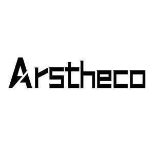

Trade Mark Journal No.2026/008 20 February 2026
UK00004336332 6 February 2026 (6,11,20,27)

- Class 6
- Bicycle locks; Metal bicycle storage racks; Ladders of metal; Hinges of metal; Tool chests of metal, empty; Scaffolding (Metal -); Ladder supports of metal; Work platforms [scaffold towers] of metal; Roof flashings of aluminium; Security boxes of metal; Metal step ladders; Barbed wires; Non-luminous metal house numbers; Metal shutters; Metal shower grab bars; Fire-resistant safes of metal; Metal mail slots; Letter-box flaps of metal; Chests of metal; Awnings of metal; Racking [structures] of metal for storage purposes; Bird-repelling devices made of metal (Wind-driven -); Bins [metal structures]; Metal letter boxes; Metal roofing tiles.
- Class 11
- Heaters for automobiles; Ceiling fans; Penlights; Kitchen ranges; Electrical cooking utensils; Showers; Solar lamps; Bathroom installations; Hanging lamps; Steam cookers; Fluorescent lamps with low ultra-violet light output; Decorative lights; Bicycle lamps; Installations for airing; Hand held shower heads; Bath cubicles; Toilet seat lids; Sanitaryware; Electric grilling apparatus; Electric laundry dryers; Stainless steel sanitary ware; Air conditioning; Metal sinks; HID [high-intensity discharge] architectural lighting fixtures; Pre-assembled multifunction showers; Barbecue grills; Electric furnaces; Refrigerating installations; Lamps for lighting purposes; Faucets.
- Class 20
- Inflatable mattresses, other than for medical purposes; Indoor furniture; Beds; Chairs; Furniture for offices; Bathroom vanities [furniture]; Computer tables; Racks [furniture]; Computer furniture; Bed mattresses; Furniture for house, office and garden; Bed frames of metal; Drawer slides [furniture hardware]; Bed frames; Inflatable furniture; Infant walkers; Indoor window shades of textile; Storage racks; Work benches; Deck chairs; Outdoor furniture; Household furniture; Window shades [blinds]; Coatstands; Shelves of metal [furniture]; Inner sprung mattresses; Mattresses; Furniture adapted for use outdoors; Mirrors [furniture]; Mirrors.
- Class 27
- Yoga mats; Wallpaper; Vinyl floor coverings; Gymnastic mats; Floor coverings; Artificial turf; Carpet tiles made of plastics; Carpet tiles for covering floors; Baby crawling mats; Artificial lawn; Artificial ground coverings; Anti-slip floor coverings for use on staircases; Wallpaper with 3D visual effects; Wallpaper in the nature of roomsize decorative adhesive wall coverings; Wallcoverings; Wall paper of vinyl; Wall coverings; Vinyl floor coverings for existing floors; Turf (Artificial -); Textile floor mats for use in the home; Straw mats [mushiro]; Rugs; Protective floor coverings; Non-slip underlays; Mats; Imitation turf for use in covering surfaces for recreational purposes; Floors coverings of rubber; Floor coverings [mats] for use in sporting activities; Floor coverings [for existing floors]; Decorative wall hangings, not of textile.
Hanwen Lin
Representative: YH Consulting Limited